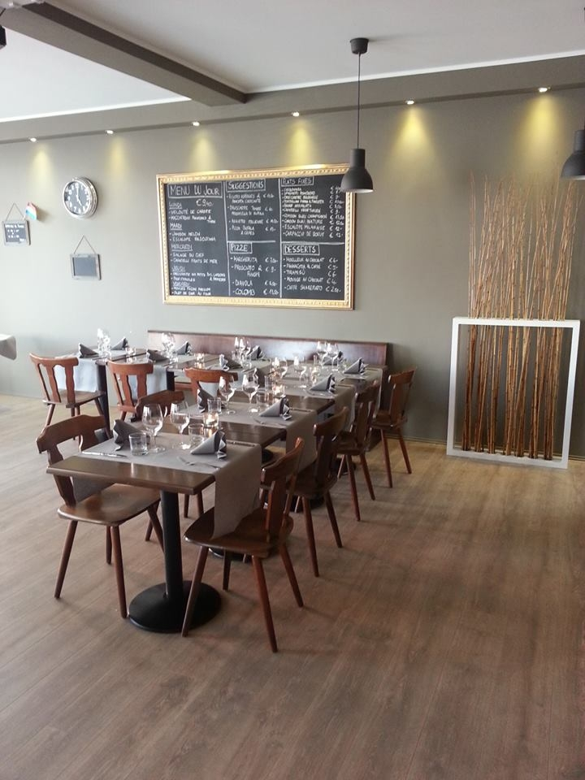
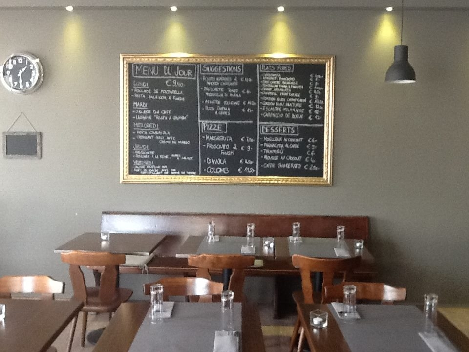
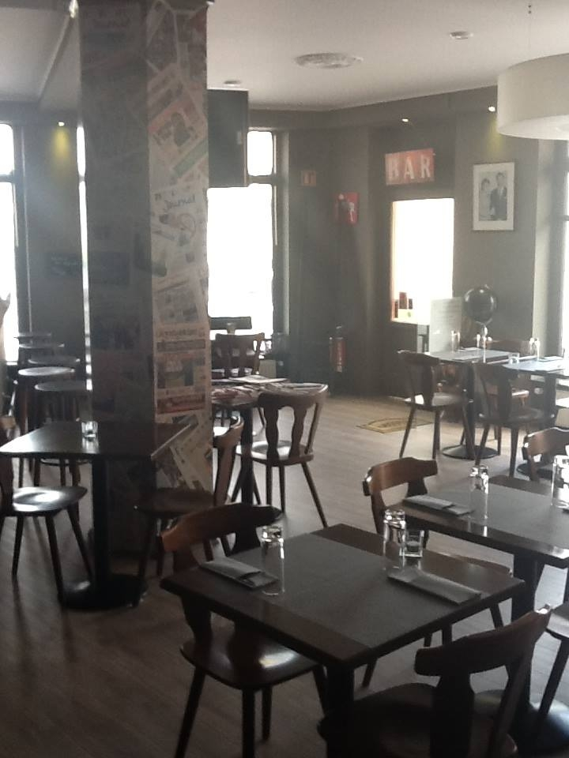
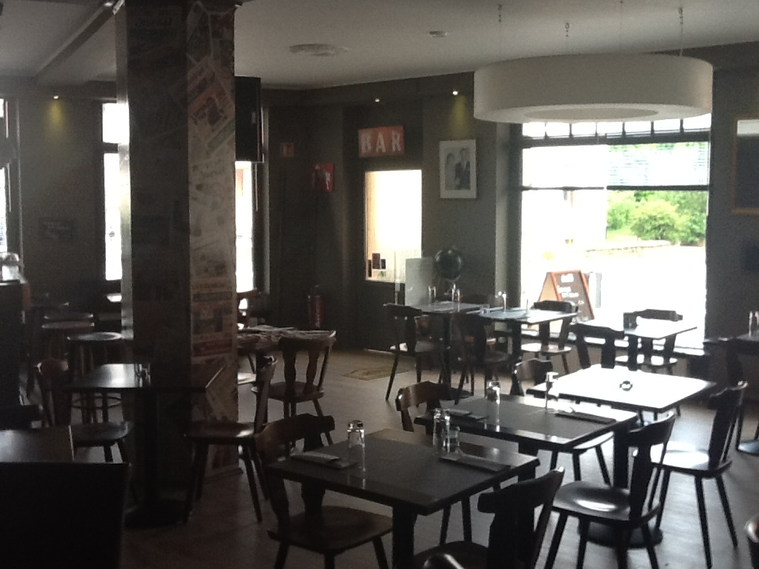
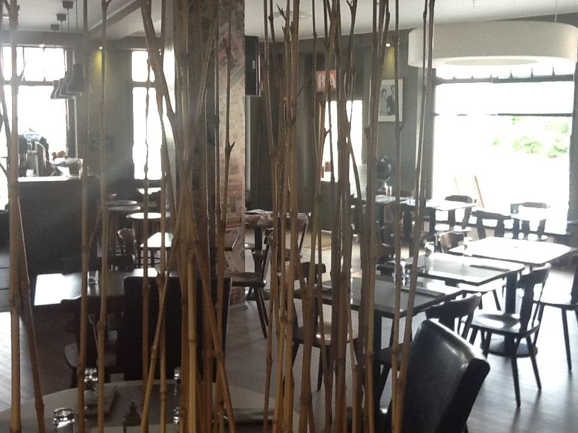

LundiI
Roulade de mozzarella
Pasta salsiccia & funghi
Pâtes, saucisse italienne, champignons
9,40 ۈ confirmer

Le menu du jour, les pizze au feu de bois et les pâtes maison — une table conviviale au cœur du quartier d'affaires de Gasperich.

La carte complète vit sur l'ardoise en salle et tourne au fil des saisons. Ces catégories sont données à titre indicatif.
carte & prix à confirmer

